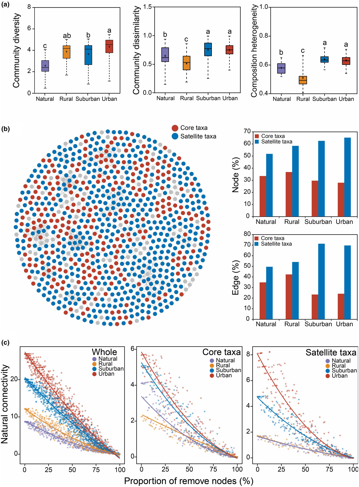
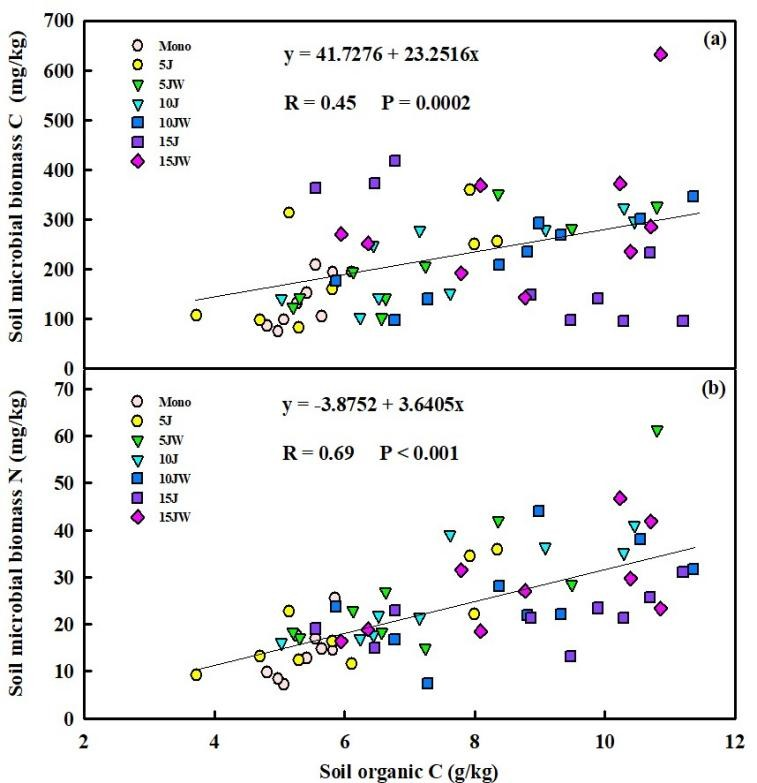
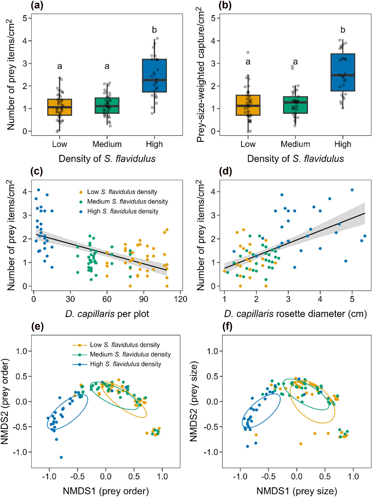
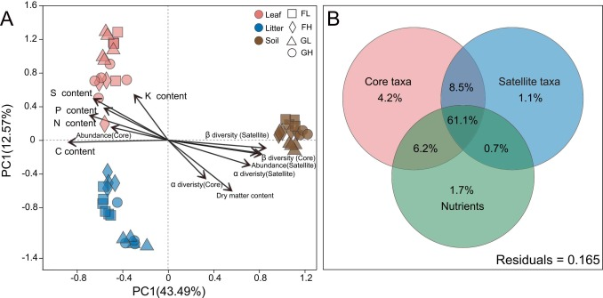

How do microbial communities assemble and function across environmental gradients? My work in this area spans from the phyllosphere to the rhizosphere, examining how fungal and bacterial communities respond to urbanization, land-use change, and experimental manipulation.
As a co-first author with J. Li, I helped reveal how phyllosphere microbiomes and their functional genes shift along urbanization gradients — work published in New Phytologist. At the Cary Institute, I now lead multi-stressor field experiments (SOS Plots) examining how microbe, invertebrate, and plant communities respond independently and interactively to global change factors.
I also investigate the role of canopy soils — often-overlooked reservoirs of organic matter and microbial diversity — in forest nutrient cycling and carbon dynamics.
Microbial isolates from soil community profiling



